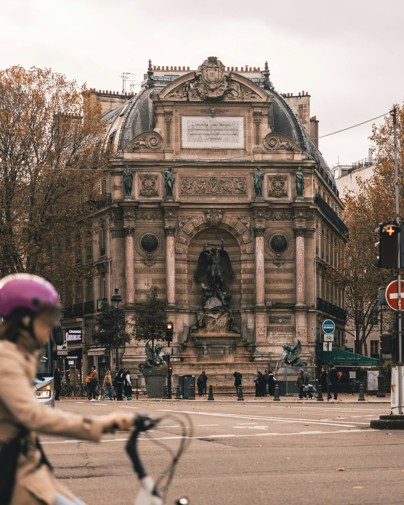

From the cathedral rebuilt from ashes to the palace where French history lives. Walk the ancient heart of Paris at your own pace.
From Notre-Dame to the Louvre, through the oldest streets in Europe. The island, the bridges, the cafes where existentialism was invented. Not bad for an afternoon.
Leave a quick review. It helps other travellers find us and means a lot.
♥ Thank you so much. We'll read it and add it to the site shortly.
You've seen what this tour is like. The next 5 stops go further. €4.99, yours to keep forever.
Unlock Full Tour - €4.99Payments powered by Lemon Squeezy & Stripe